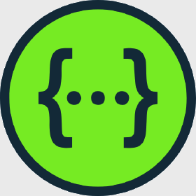

In TheyBuyForYou we have been working on a layered architecture of data services, ontologies, core APIs and tools that allows different levels of access and use of the procurement knowledge graphs that we have been creating.
Having a layer-based architecture allows describing the separation of the different services so that most of the interaction occurs only between adjacent layers and any change in a technology would not affect the rest of the services. As can be seen in the figure "Tech Stack", for this architecture, five main layers have been defined, those corresponding to data, tools, schemas, core APIs and added-value services that will be explained below.
Tech Stack
High-level Architecture
Added-value services
In this top layer you can find the added-value services. This added-value services are non-basic services, although they do use the core APIs, that go beyond standard ones and have extended features and add-ons to basic core functions.
API Gateway
The TBFY API provides a flexible abstraction layer and a single-entry point that securely manages communication between TBFY clients and online tools via API.


search API
The search API explores collections of multilingual public procurement data through a Restful API.
Storytelling
Storytelling tool is a client-side JavaScript framework designed for the purpose of supporting authors of data stories.

Suppliers notebook
Suppliers notebook is an example to explain how the knowledge graph can be exploited through a notebook.
Organisation comparison notebook
Organisation comparison notebook is an example of how to create an added value servie exploiting the core API and search API (via API gateway).
Streamstory
StreamStory is a tool, which is intended to help with analysis and interpretation of time varying data.

Anomaly detection
Visualise and analyse public procurement data and spending data is an online toolkit exploring public spending and tender data and detecting anomalies in them, to make public procurement more efficient and transparent.
EDP visualisaton components
Economic Data Portal (EDP) is a visualisation tool for suppliers payment period.
Compra Pública Inclusiva (COPIN)
COPIN (COmpra Pública INclusiva) aims at providing better understanding on how public administrations specify and evaluate public tenders.
core APIs
In this layer you can find the set of core APIs built or used in TheyBuyForYou project. We have to distinguish between APIs created specifically for the project (internal) and tools that have not been developed specifically for this project but have been used (external). These core APIs are implemented with the basic resources to extract information from the knowledge graph, from the document repository or even from external data sources.
internal
knowledge graph API
The knowledge graph API allows to get information about tenders, organisations, awards, contracts and contracting-processes from the RDFs triple store built within TheyBuyForYou Project.

Public procurement OCDS API
The public procurement OCDS API is part of the Economic Data Portal (EDP) business case and allows to get information about public procurement from Zaragoza City Council.
external
OpenCorporates companies API
OpenCorporates companies API provides access to gather data to over 135 million companies from primary public sources.

OpenCorporates reconciliation API
OpenCorporates reconciliation API allows OpenRefine users to match company names to legal corporate entities getting more information about companies and making it easier or match company names to legal corporate entities.
OpenOpps API
OpenOpps API provides access to tender and contract data from a range of European government bodies, formatting according to OCDS.
librAIry API
librAIry API relates documents from their content, regardless of the language used. SearchAPI has been built on top of it to work with TBFY data.
Wikifier
Wikifier is a web service which takes a text document as input and annotates it with links to relevant Wikipedia concepts.
Tools
In this layer you can find the tools built or used in TheyBuyForYou project. We have to distinguish between tools created specifically for the project (internal) and tools that have not been developed specifically for this project but have been used (external). Among the types of tools, we can find from tools that feed databases to tools that query the TheyBuyForYou SPARQL endpoint.
Internal
Harvester
Harvester downloads articles and legal documents from public procurement sources (OpenOpps, JRC-Acquis or TED) and index them into SOLR to perform complex queries and visualise results through Banana.
R4R
R4R easily builds and deploys RESTful services from SPARQL queries. Core API uses it to browse the TBFY knowledge graph.
KG data ingestion pipeline
Data ingestion pipeline downloads OCDS releases in JSON format and reconciled supplier-company records in JSON format, enriches and transforms the data to RDF (using RML), and publishes the data to the TBFY KG database.
External
SPARQL GUI for TBFY KG
YASGUI (Yet Another SPARQL GUI) is a web application to query any SPARQL endpoint.
OptiqueVQS
OptiqueVQS enables end users with no technical background and skills to transform their information needs into SPARQL queries visually.
Schemas
In this layer you can find the schemas that define the vocabularies of our domain, using a set of basic terms and relationships between those terms, as well as the rules that combine terms and relationships and that extend the definitions given in the vocabulary. These vocabularies are the intermediaries that get the knowledge graph to be understood with tools like SPARQL GUI or R4R.
TBFY ontology
The TBFY ontology imports the OCDS ontology (for procurement data) and the euBusinessGraph ontology (for company data). In addition, it contains a few extensions in order to represent additional meta information needed for the TBFY KG.
euBusinessGraph ontology
euBusinessGraph ontology for company data. This was originally developed in the euBusinessGraph project and is now being used by TBFY.
Data
In this bottom layer you can find the data that feeds both, the knowledge graph and the document database. The knowledge graph data is obtained from the OpenOpps and OpenCorporates datasets and, through the data ingestion tool, they are transformed into the RDF format to build the triple store.
TBFY Knowledge Graph (KG)
The knowledge graph is a database that contains the information about tenders, contracts, awards, organisations and contracting processes, used by de API Gateway.
Document repository
Database that contains the set of legal documents indexed form Harvester.